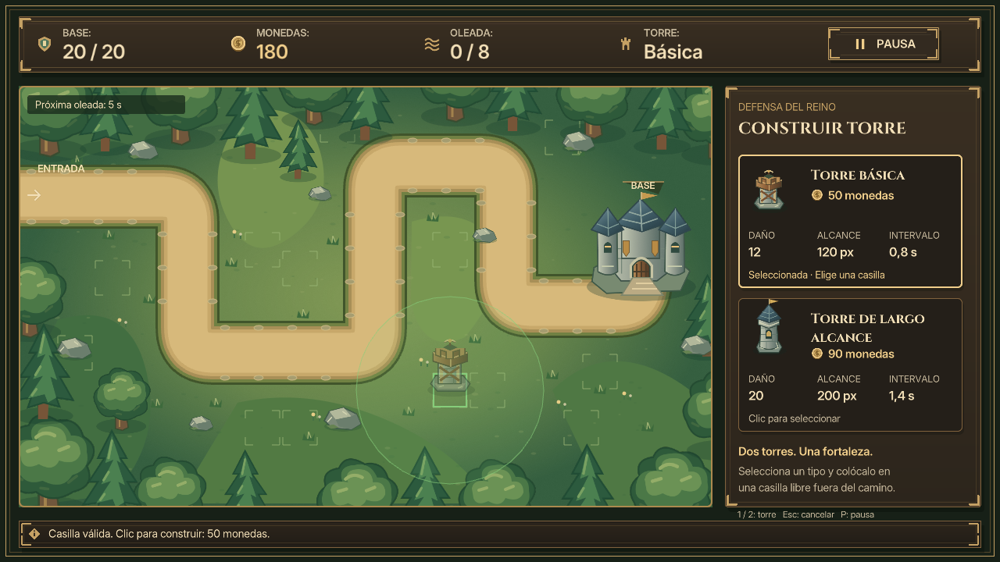
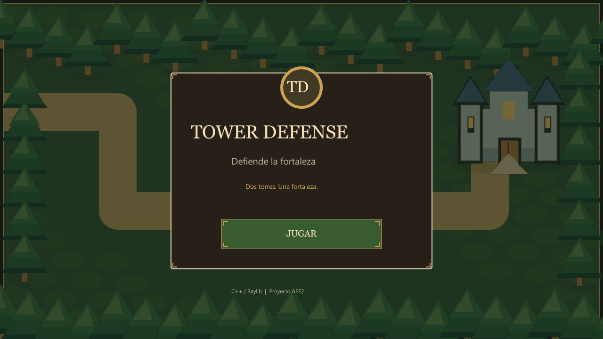
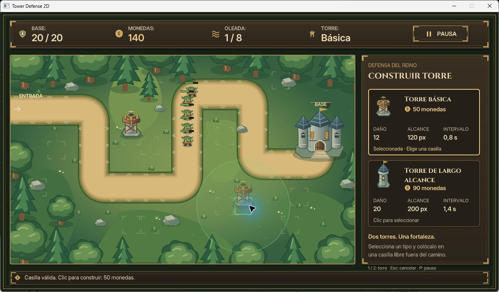
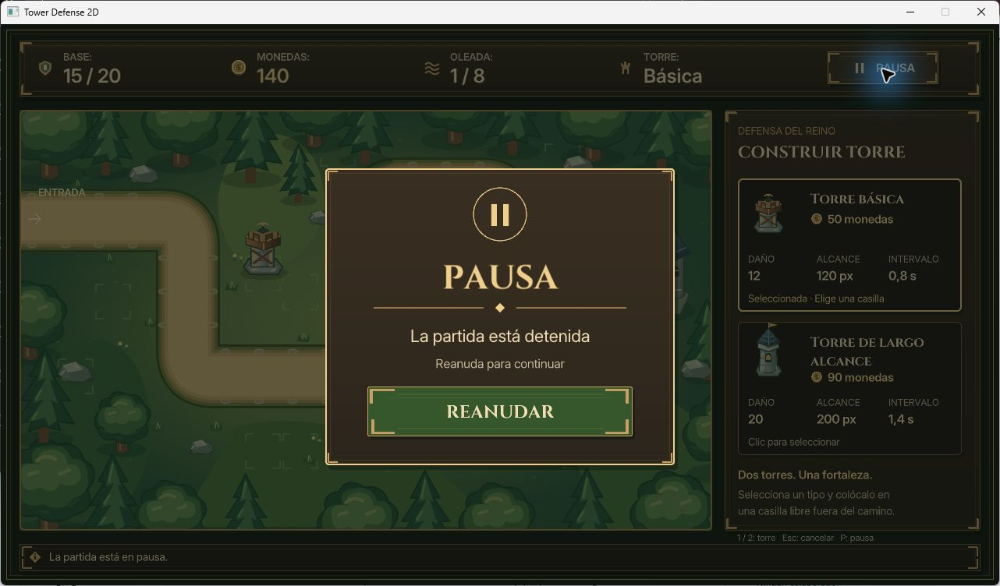

TowerDefense2D · Comparación visual
9 de noviembre de 2026. Exportaciones individuales originales de Figma integradas en el proyecto existente. Las capturas proceden de un contexto OpenGL real; victoria y derrota usan escenarios de prueba declarados. Los valores de vida, monedas, enemigos y oleada difieren porque son partidas funcionales, no composiciones estáticas.
Evaluación cualitativa en REVISION_VISUAL.md. Hacer clic en cualquier imagen abre su tamaño original.
MK-01 · Interfaz y HUD
Referencia suministrada Captura real del juego · 1280 × 720
Captura real del juego · 1280 × 720
MK-02 · Selección y colocación válida
Referencia suministrada
Captura real del juego · 1280 × 720
MK-03 · Colocación inválida
MK-04 · Combate
MK-04 usa la referencia MK-01, que contiene enemigos y proyectiles: no se proporcionó un PNG separado con ese nombre.
Antes y después del menú
Versión anterior conservada
Versión actual
Recorrido interactivo de Windows
EXE Release del paquete existente: JUGAR, selección, construcción, rechazo sobre el camino, PAUSA y REANUDAR. Capturas de la ventana nativa; el puntero y el halo pertenecen a la herramienta de interacción.

